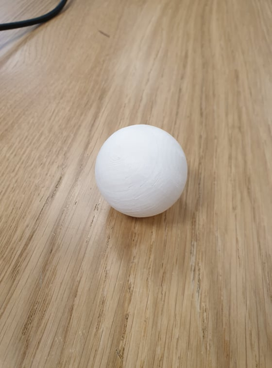

Visual Studio Code logo.
In assignment 1 we were suppose to create a website to document
everything we do in the class, It was recommended that i download
Visual Studio Code and the extensions HTML CSS support and HTML Snippets.
I don‘t have any experience making a website so i googled some videos
and went from there. Since I am very new at this I decided to just write
basic html and css, without any extra packages or frameworks like React or SASS.
Github logo.
When I had finished the website I had to upload it to github.
To start I had to create a repository on github and copy the clone
URL of the repository, then open a terminal on my computer and change
the working directory to my local folder where the website was saved.
Next I had to type the command "git clone https://github.com/Hafthor97/hafthor97.github.io.git"
and hit enter. Next I added the local folder to the repository by typing command "git".
The last thing was to commit the folder by typing the command
"git commit –m 'First commit'" into the teminal and push the folder by
typing "git push origin master".
Project 2
Design and laser cut a pressfit construction kit.
In Assignment 2 we were suppose to use a CAD software to build
a parametric design of a pressfit construction kit, then cut the
design with a laser cutter. I started by downloading Autodesk Fusion 360.
I used a video given in the assignment to help me with the
pressfit design.
First i started putting in the parameters for the box :
Then I started sketching my box:
The dimensions were typed in by using the parameters show at the start.
To get the bodies to fit I used combine in the modify section and cut as
was shown in the video. Then made the other side by choosing the object
and duplicating it then choosing to extrude them from the object and
choose what side the new object should go.
When the box was finished it had to flatten it out and export it
into an DXF file and then fix the DXF file in Inkscape then it
was finally ready to go to the laser cutter:
In the laser cutting machine I first had to adjust the setting,
I used wood and set the setting to be 11/100/500 and started the cut.
The final result looked like this:
Project 3
3D printing and scanning.
In assignment 3 we were first off suppose to make something that could
not be made subtractively and then 3D print that design.
Secoundly we were to 3D scan something with a 3D photogrammetry.
3D printing
I decided to use Autodesk Fusion again for this part of the assignment
and decided to make a ball with the same dimensions as a golf ball.
Then i went to Fablab to print out my design.
First I had to extrude my file as an .stl file and open it in a
software called cura. After adjusting the settings in cura my golf ball
looked like this:
Then the ball was ready for 3D printing so i went to a 3D
printer and started the print:
This was the final result:

3D scanning
Regard 3D logo.
In the second part we were suppose to 3D scan an object as I
mentioned before. I decided to use the software Regard 3D so I
downloaded it and then went on to take 100 photos of the object
I was going to 3D scan and uploaded them to Regard 3D.
I chose to try and 3D scan a bottle of vodka,
it took around 90 mins to compute the match.
After the computing and triangulation this was the result:
Then I added densification and got:
After that i messed around with surfacesettings:
Until i got a result i felt like was the best:
3D printing did not take me too long. It took around 30 minutes
to decide what to make and draw it in fusion,
then it took around 1 hour to move to cura and get it
ready and actually printing it out.
3D scaning took a long time and messing with the setting and
waiting for the new results ended up taking around 8.5 hours.
Workload was ~ 10 hours.
Final Project
Build an epoxy cutting board.
Cutting board idea.
For our final project we had the idea to make a cutting board for
the average joe’s kitchen. We wanted to integrate molding with
resin and computer-aided design.
The basic idea was to design something like this.
We started by drawing up a sketch in Inventor and decided it was easier
to make the board rectangular.
We kept the idea to make a handle so you can hang it up on a hook or a peg.
As you can see on the picture, the corners are all filleted to get a
better outlook. It was best to have the hook hole in the first sketch
to make it easily extrudable.
This wasn’t the final look however, we still had to fillet
all the edges to make it look like a more regular cutting board.
We did this to all the edges, including the inside of the hanger hole so to
make it easier to hang up. We made the fillet 5mm, which was just a number
guessed upon. Now we wanted to make a gutter in it like in some
cutting boards for all the juices coming from the food sliced and diced
on it. For that we simply made a sketch and extruded it into the board,
then we filleted all the edges, also the ones on the bottom of the
gutter to make it easier to clean.
Now to make it look more professional we changed the material to Maple Wood.
Here down below you can see the outcome:
You can see that the gutter is only on one side of the board.
Next it was time to cut out a filleted rectangle out of the board
to make a composite in. For that we simply made a sketch and extruded
it into the existing object.
This is what we wanted to cut out of a plank of wood.
Then we just had to put an airtight bottom on the board to pour the resin in:
For a look at the final result, we drew up the resin in another part
in Inventor and assembled it together with the board. This was the outlook
we wanted in the end.
For the production of it we would have taken a board of either oak or
maple and cut out the rectangular shape along with the handle.
The next step would have been to cut out the chunk of the board where
the resin would go, sandpaper it to make it smooth and blow all the
sawdust away. Once that’s finished it’s possible to pour the resin in and
wait for it to harden. Then we would have cut out the gutter in the board
and sandpapered it as well. The final step would be to lather the whole
thing with oil to make the resin reflective and the wood fine.